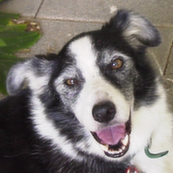

For a typical photograph, each of the three (Red, Green, and Blue) channels are represented by one byte of data for each pixel. This means that it requires three bytes of data for each pixel, this is often referred to as 24 bit color (24 bits, because 8 bits equals 1 byte and there are three bytes). Because each byte can hold 2^8 or 256 different values, each channel can have 256 different levels of that color (1/256 or 0.39% change per level if everything is done evenly). You may have noticed that the R G and B values on the demonstration we used in the channels section only had 256 different options, if you don't remember, go back and check it out now:
http://developer.yahoo.com/yui/examples/slider/slider-rgb_clean.html
Because there are three different channels, that means each pixel can represent 256x256x256 colors or over 16 million different color combinations. That's a lot more than even the largest box of crayons.
For a 12 megapixel image from a modern camera, this means that it would require 36 Megabytes (MB) of storage space! That's a lot when you go out with your camera and want to take a bunch of pictures. If you have a 1 Gigabyte (GB) memory card for your camera, that would only allow you to store about 30 images.
Because of the huge size of files that just contain the pixels, people have come up with various ways of compressing images into smaller files. These can be put into two different groups: Lossless and Lossy.
Lossless Compression
Lossless compression takes the files and finds ways to mathematically make them smaller, in a way that can be completely un-done. The easiest way to do this is to run the image through a general compression tool like zip. Zip is a tool that is available on all computers, that goes through any file (not just images) and finds ways to make it smaller. One simple way this is done is if there are many pixels in an area that are the same color, there can be an instruction that when the image is drawn to color that whole area in the correct color. That instruction telling what the computer to do can be hundreds of times smaller than the amount of space it would require to store all the pixels in the area. There are many other ways to do this, but they are generally very complicated and beyond the scope of this material.
http://en.wikipedia.org/wiki/Lossless_data_compression
Lossy Compression
Lossy compression is different in that once a file is compressed there is no way to get back the exact same file, some detail is always lost. Since images are made of millions of pixels each possible of representing millions of different colors, there is some room for removing detail before the human eye would notice any difference. This can be done with a combination of the lossless compression methods, as well as things like assuming that a color of one pixel is similar to the pixels surrounding it, and many more complicated methods. Also beyond the scope of this material.
Below are three examples which illustrate lossy compression. The
example on the left is the original and was compressed with loss-less
compression. The middle picture was compressed with lossy
compression, which was set to not loose very much data. The image on
the right used lossy compression with very aggressive settings. It
made a much smaller file size than the middle one (1.1KB vs 9.4 KB)
but obviously the compression removed parts of the image that are
important for making it look good.

http://en.wikipedia.org/wiki/Lossy_compression
File Storage
There are many different types of files that are used for images, most of which support one or more specific lossless or lossy compression methods. Below is an overview of them, there are many less-used formats in addition that aren't listed here. See: http://en.wikipedia.org/wiki/Image_file_formats and http://en.wikipedia.org/wiki/Comparison_of_graphics_file_formats for more information.
Bitmap (.bmp, others) -- Contains all the pixels of the image, without compression. The .bmp format specifically is used by Microsoft in their programs for displaying images, but similar methods are used in all types of computers. As it stores all the pixels, this is a lossless format, in fact by default it is not compressed at all.
JPEG (.jpg, .jpeg) -- Stands for Joint Photographic Experts Group, was developed specifically for storing images taken by digital cameras, and is by far the most used format for digital photographs. This is a lossy format, however with typical settings it is very difficult to detect any image degradation.
PNG (.png) -- Portable Network Graphics is better at storing images that don't have a lot of detail, such as graphics on websites. This is a lossless format.
GIF (.gif) -- Graphics Interchange Format is similar to but older than PNG. In general PNG should be used instead, however there is one feature that it has that PNG currently does not, which is to be able to have multiple images stored inside it, which can be played back as a simple animation.
JPEG2000 (.jp2) -- This was an attempt at creating a better version of the JPEG format, however it has not been very successful, and is mostly used in professional situations such as medical imaging. This format has options that can make it lossless or lossy.
JPEG XR/HD Photo (.jxr) -- This is another attempt at creating a better version of the JPEG format, originally developed by Microsoft as "HD Photo" it was submitted to the Joint Photographic Experts Group who accepted it as a new standard. It has not yet caught on in mainstream use. This format has options that can make it lossless or lossy.
WebP (.webp) -- This is a new format developed by Google that is designed for replacing JPEG (and some PNG) for use in images on the web. It is not currently supported by all web browsers, but work is ongoing on it. This format is lossy.
TIFF (.tif, .tiff) -- Tagged Image File Format is used mostly for images of documents (such as scans). It has support for multiple pages of images, as well as metadata such as where the image was collected, who wrote it, etc. Usually it is used as a lossless format, but it has the ability to use JPEG or other types of compression inside it.
Raw (.raw, .cr2, .crw, .nef, .nrw, dng, and more) -- Raw images are not a specific format, but a grouping of many different formats, all of which are built from cameras. By default cameras usually produce JPEG images, which are lossy and don't contain all the basic data that the camera recorded about the image. When a photographer gets a raw image, he or she gets all the data that the camera collected, which can be useful when doing advanced processing of the images on a computer.
XCF (.xcf) -- eXperimental Computing Facility is the name of the file format used to store projects in the Gimp photo editor. It stores photographs losslessly, and can store multiple layers of photos and other data such as text, lines, selections and more.
PSD (.psd) -- PhotoShop Document very similar to the XCF format, but used by photoshop. It is also lossless, and can store multiple layers of photographs and data.
Bonus, non raster-image formats:
EXIF - Exchangeable Image File Format is used for metadata about the image, it is not a file on its own, but is incorporated into other files such as JPEG. It can contain a huge number of different data fields including: date the image was taken, camera settings, exposure time, aperture size, zoom level, GPS coordinates of the camera, direction the camera was facing, and many more.
SVG (.svg) -- Scalable Vector Graphics files are used to store images generated on a computer, not photographs. These files do not store any pixels, but rather store information about where lines, circles, text, and other components are in relationship to each other (referred to with vectors). It is called scalable because the instructions for creating the image can be given any unit of length and make the entire image based on that. In addition the instructions for generating the image can include references to amounts of time, so the image can change as it is drawn making an animation. Because there are no pixels to be calculated, this is an inherently lossless format.
EPS (.eps) -- Encapsulated Post Script files are similar to SVG files, but somewhat older and has more limited features, such as not being able to do animation.